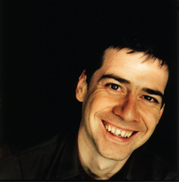
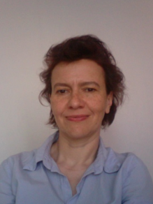

Keynotes
Craig Vear
 Craig Vear is Professor of Digital Performance and Music at De Montfort University, UK, where he was recently awarded a European Research Council project. Drawing on findings from over a decade’s worth of practice-based experimentation in the field, the author builds a framework for understanding how digital scores create meaning. This book provides a solid foundation for any student/artist/teacher wishing to explore the relationship between notation and technology.In the author's own words:
Digital technology is transforming the musical score as a broad array of innovative score systems have become available to musicians. From the mediation of printed page, to animated and graphical scores, to artificial intelligence-based options, digital scoring affects the musical process by opening up new possibilities for dynamic interaction between the performer and the music, changing how we understand the boundaries between composition, score, improvisation and performance. The Digital Score: Musicianship, Creativity and Innovation offers a guide into this new landscape, reflecting on what these changes mean for music-making from both theoretical and applied perspectives.
Anne Sèdes
 Professor of composition and research. Head of the Centre de recherche en Informatique et Création Musicale (CICM), part of the research unit "MUSIDANSE", EA 1572, music department of the University of Paris 8. Co-coordinator of the "Computer-Assisted Composition (CAD)" course, Department of Music, University of Paris 8. Scientific and technical director of the LABEX Arts-H2H of the University of Paris 8 since October 2015, then deputy director of the EUR ARTEC since September 2018. Director of the Maison des Sciences de l'Homme Paris Nord, USR 3258 of CNRS, since August 2019. Member of the Board of EDESTA (Ecole Doctorale Esthétique, Sciences et Technologies des arts). Co-president of the AFIM, Association Francophone d'Informatique Musicale. Director of the Revue Francophone d'Informatique et Musique, a peer-reviewed online journal. She participated in the design of the MOOC "Music beyond digital", as part of the So'culture project, led by the Comue Paris Lumières. Composer, Anne Sèdes develops all her productions in an experimental framework linked to research-creation at the university. Her fields of research are: computer science and musical creation, composition and research, virtual environments and creation, spatialization of sound, image-sound relationship, listening and cognition.Sandeep Bhagwati
 Sandeep Bhagwati is a a composer, researcher, poet, theatre maker, installation artist, and conductor, born in India, a citizen of Germany now living in Montréal, Canada.
In his work, he likes to ask himself questions that he cannot answer, set himself tasks that stymie him, and to break with practices that no one thinks are broken. In order to further foster and enhance his ignorance, he founded, in 2006, a research-creation lab at Concordia University, the matralab, where he and his team work on computer-improvisation, interactive scores, invisible bodysuit scores and creative research into inter-traditional music and theater forms, but also on the theoretical-artistic exploration of comprovisational technique, inter-traditional aesthetics and world-conscious art practices such as political performance, environmental sound art or responsive creation.
Sandeep Bhagwati is a a composer, researcher, poet, theatre maker, installation artist, and conductor, born in India, a citizen of Germany now living in Montréal, Canada.
In his work, he likes to ask himself questions that he cannot answer, set himself tasks that stymie him, and to break with practices that no one thinks are broken. In order to further foster and enhance his ignorance, he founded, in 2006, a research-creation lab at Concordia University, the matralab, where he and his team work on computer-improvisation, interactive scores, invisible bodysuit scores and creative research into inter-traditional music and theater forms, but also on the theoretical-artistic exploration of comprovisational technique, inter-traditional aesthetics and world-conscious art practices such as political performance, environmental sound art or responsive creation.